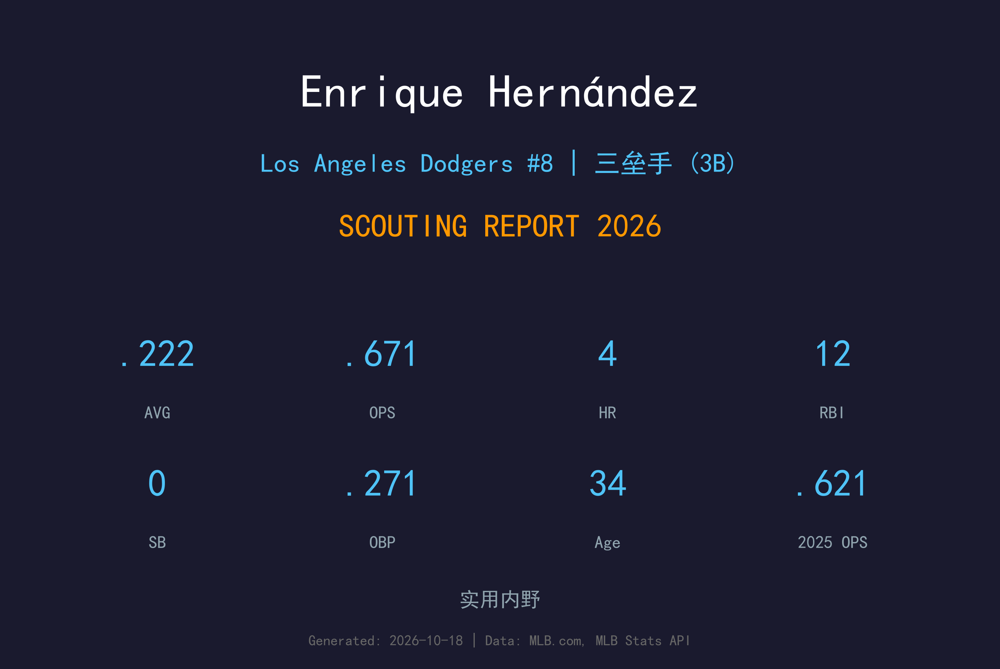
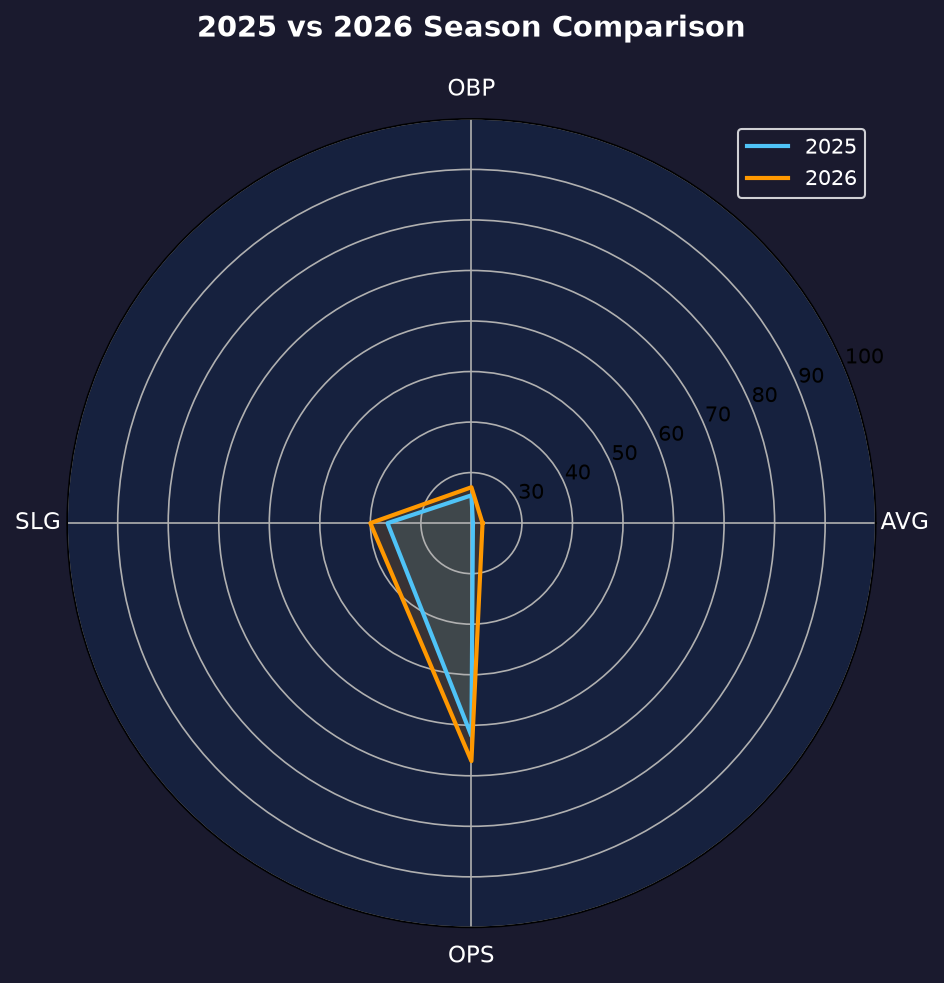
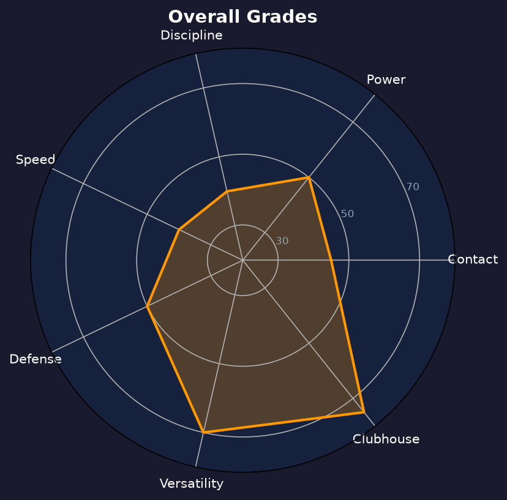

Los Angeles Dodgers #8 | 工具人（内野/外野） | 右打 | 快乐能量

Enrique "Kiké" Hernández 是道奇更衣室的快乐引擎，能守内野三岗与外野两个位置，偶尔还能客串投手，是联盟最具人气的 veteran utility 之一。
2026年2月他重返道奇，出赛41场缴出.222/.271/.400、OPS .671，4轰12打点。数据不算亮眼，但相较2025年的.203/.255/.621 OPS 有所回升，长打率从.366升至.400。
35岁的 Kiké 价值早已超越数据——他的守备弹性、季后赛经验与更衣室能量是道奇愿意给他 roster spot 的原因。他还留下了1局无失分的客串投球记录，延续"什么都能做"的传奇。
以 utility 身份在季后赛多次先发建功，包括国联冠军赛的救援胜，是道奇夺冠功臣之一。
2019季后赛打出.333打击率，多支关键长打，证明大场面属性。
2026年2月与老东家再续前缘，用经验与领导力补强道奇深度阵容。

| 赛季 | G | AVG | OBP | SLG | OPS | HR | RBI | BB | SO |
|---|---|---|---|---|---|---|---|---|---|
| 2025 | 93 | .203 | .255 | .366 | .621 | 10 | 35 | 18 | 54 |
| 2026 | 41 | .222 | .271 | .400 | .671 | 4 | 12 | 6 | 28 |
Kiké 的挥棒大开大合，追求长打而非 contact。2026年他的长打率回升至.400，但三振率29.2%（28K/96PA）与保送率6.3%显示他的打感仍然粗糙——他是一名"要么轰、要么空"的打者。
这是他真正的价值所在。二垒、三垒、游击、左右外野全部能守，虽然每项都只是平均水准，但"哪里缺人补哪里"的灵活性在162赛季的消耗战中极为珍贵。他的传球准确度在内野手中属于中上。
41场出赛、.222/.271/.400，是一个标准的 veteran utility 赛季——数据不突出，但在需要他的比赛里总能做出贡献。1局无失分的投球记录也延续了他"工具箱最深球员"的传说。

数据平庸但价值藏在守备弹性与更衣室能量里
B- 级 / 老将工具人
道奇 2026 季后赛战绩：NLDS 3-1 晋级、NLCS 0-4 止步。
| G | PA | AVG | OBP | SLG | OPS | HR | RBI | BB | SO |
|---|---|---|---|---|---|---|---|---|---|
| 5 | 15 | .071 | .071 | .286 | .357 | 1 | 2 | 0 | 3 |
Enrique Hernández 的2027赛季可能取决于道奇的阵容深度需求。若球队需要一位能守多位置的老将导师，他会是性价比之选；否则他可能走向教练席或转播台——他的个性与球商都适合。
2026：41场、.222/.271/.400、1局救援投球——标准老将工具人季
2027：争取保留 roster spot，角色将进一步向 pure depth 倾斜
2028+：球员生涯尾声，可能转型教练或球评
Enrique "Kiké" Hernández 出生于波多黎各圣胡安，2014年在休斯顿太空人登上大联盟。2015年他被交易至洛杉矶道奇，从此开启了与这座城市长达十年的缘分——包括2020年世界大赛冠军。
2026年2月，在外流浪数年后，Kiké 选择重返道奇。他在休息区的能量、雷鬼舞步庆祝与无私的团队精神，让他成为球迷与队友共同的宠儿。
场外的 Kiké 是波多黎各棒球大使，积极参与家乡棒球设施建设。他的职业寿命或许进入倒计时，但他的传奇已深植道奇队史。